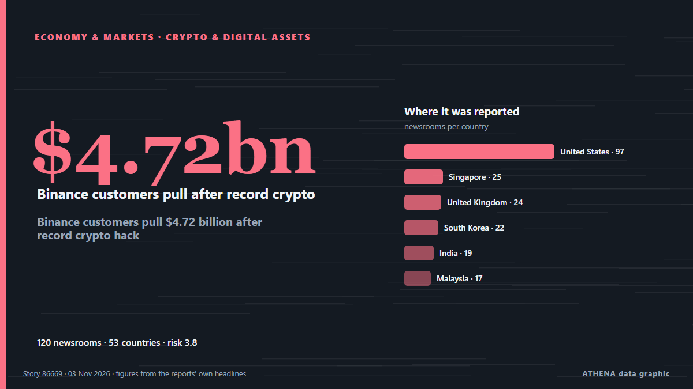

ATHENA Glaux Intelligences — Globale Nachrichtenanalyse — jede Zahl erklärt
Weltnachrichten, über Ländergrenzen hinweg geprüft
ATHENA Glaux verfolgt Hunderte Nachrichtenmedien weltweit und fasst ihre Berichte zu Ereignissen zusammen. Zu jedem Ereignis sehen Sie, wie viele Medien in wie vielen Ländern berichtet haben, wer zuerst berichtete, und einen Risikowert mit seinen Gründen — alle 10 Minuten aktualisiert, in sieben Sprachen.
Live aus den NachrichtenHoax bomb threats disrupt flights in Europe92 Medien · 40 Länder · Risiko 4.8 · Quellen: Rappler, Simple Flying

Wirtschaft und MärkteBinance customers pull $4.72 billion after record crypto hack
An on-chain tally puts the suspected Binance drain at $5.57 billion across three blockchains, as Tether and Circle froze $1.8 billion. von Decrypt
Schlagzeilen werden auf Englisch angezeigt, wie veröffentlicht.
ECB keeps rates on hold as Christine Lagarde announced her resignation
The deposit rate will be left at 2.5% on Thursday, analysts say. von Luxembourg Times
US delivery of 500 Patriot missiles to Ukraine will span 3 years starting in 2030
NATO Supreme Allied Commander Europe General Alexus Grynkewich said the United States continues to supply Ukraine with Patriot interceptor missiles, as well as weapons packages paid for by European… von Ukrinform (English)
Heute in Zahlen
| 00:00 | 433 |
|---|---|
| 01:00 | 349 |
| 02:00 | 381 |
| 03:00 | 312 |
| 04:00 | 495 |
| 05:00 | 496 |
| 06:00 | 687 |
| 07:00 | 510 |
| 08:00 | 713 |
| 09:00 | 1700 |
| 10:00 | 836 |
| 11:00 | 839 |
| 12:00 | 768 |
| 13:00 | 733 |
| 14:00 | 1167 |
| 15:00 | 647 |
| 16:00 | 1105 |
| 17:00 | 598 |
| 18:00 | 670 |
| 19:00 | 620 |
| 20:00 | 444 |
| 21:00 | 443 |
| 22:00 | 293 |
| 23:00 | 659 |
Risiko der heutigen Ereignisse
First polls close in closely watched U.S. midterm elections
The US midterm elections next month could change the course of American politics at home and – and American policy abroad. von The National
Oleshky ceasefire expires, Ukraine evacuates civilians from parts of Kherson region
Nov 1 - Ukraine's military said it evacuated 167 people from threatened areas of southern Kherson region on Sunday as a temporary local ceasefire expired — two days after buses carried residents out… von The Straits Times
UK PM Burnham says he is ‘open’ to formal apology for slavery, but rules out reparations
At least 12.5 million Africans were abducted and sold into slavery. von Express Tribune
Am meisten berichtet
- Wirtschaft und Märkte
Binance customers pull $4.72 billion after record crypto hack
53 Länder · 121 Medien
Neue Signale
- Neuer Name in den Nachrichten · Jetzt aktivJesus de Miguel
- Plötzlicher Anstieg · Jetzt aktivIran's Qeshm Island
- Plötzlicher Anstieg · Jetzt aktivQeshm
- Neuer Name in den Nachrichten · Jetzt aktivMount Everest
- Plötzlicher Anstieg · Jetzt aktivMillions of Americans
Amtliche Warnungen
- Red notification for tropical cyclone FOUR-26. Population affected by Category 1 (120 km/h) wind speeds or higher is 1.156 million .Red · GDACS ·
- Cyber chief: UK facing AI-powered attacks on critical infrastructure within two yearsadvisory · UK National Cyber Security Centre ·
- M 6.0 - 165 km NW of Port-Olry, VanuatuM6.0 · USGS ·
- M 6.2 - 43 km ESE of Port-Olry, VanuatuM6.2 · USGS ·
- M 6.0 - 214 km NW of Port-Olry, VanuatuM6.0 · USGS ·
ATHENA auf Telegram
Treten Sie kostenlos der Gruppe ATHENA Glaux bei und erhalten Sie die Nachrichten, sobald sie hier erscheinen:
- Eilmeldungen mit Risiko 6 oder mehr
- stündlich eine Übersicht der wichtigsten Ereignisse
- Updates der Risiko-Tracker
- das tägliche Briefing jeden Morgen um 10:00 Uhr (Athener Zeit)
- einen Wochenausblick
- amtliche Warnungen, Frühsignale und steigende Risiken
Tippen Sie auf die Schaltfläche, Telegram öffnet sich, dann Beitreten. Beiträge sind auf Englisch; Stummschalten oder Austreten jederzeit. Noch kein Telegram? Kostenlos auf telegram.org.
Risiko-Tracker
Mehr ›Globale Risiken – Woche 45, 2026 (2.–8. Nov.) ›
Geopolitik, Politik und Sicherheit
Mehr ›Americans vote in midterms set to upend Trump presidency
Democrats are seeking to seize control of both chambers of Congress as voters voice growing frustration over rising living costs, inflation and the war with Iran. von Kyiv Post
- Wahlen und Politik
South Africa: Elections 2026 | Why Your Municipal Vote Is a Vote for Public Health
- Kriege und Konflikte
2,800 troops to join first Ukraine support force exercise in Poland
- Diplomatie und Gipfel
Merz announces November 19 meeting of Coalition of the Willing in Berlin
- Wahlen und Politik
Trump faces midterm verdict with control of Congress at stake
Wirtschaft, Finanzen und Märkte
Mehr ›Palantir reports booming U.S. commercial revenue growth, topping government for first time
Palantir's commercial revenue jumped 148% to $984 million, surpassing government revenue of $953 million. von CNBC World
- Aktien, Anleihen und Märkte
Nasdaq rebounds as chip stocks rally and Dow slips
- Aktien, Anleihen und Märkte
US stocks: S&P 500 ends down; Apple dips ahead of quarterly report
- Zentralbanken und Aufsicht
Pierrakakis Opens Race to Succeed Lagarde at ECB
- Aktien, Anleihen und Märkte
Consortium led by Boehly preparing securities swap deal for Lukoil assets — Reuters
Handel, Industrie und Infrastruktur
Mehr ›King stops short of offering formal apology over transatlantic slave trade
In his address to presidents and prime ministers of the Commonwealth Charles said the transatlantic slave trade fills his heart with horror. von Evening Standard (London)
- Luftfahrt, Bahn und Straße
Around 10 European flights hit by bomb threats, triggering fighter jet scramble
- Schifffahrt und Häfen
Tanker hit by two unknown projectiles off Oman, UKMTO says
- Handel und Abkommen
U.S. to suspend South Africa, Rwanda from duty-free trade access
- Schifffahrt und Häfen
Bomb threat prompts checks on Israel-bound cruise ship in Greek port
Energie, Rohstoffe und Umwelt
Mehr ›New Jersey governor warns port operators against importing Russian diesel
'As a Navy veteran, I cannot let that stand unchallenged. von Anadolu Agency (English)
- Klima und Klimapolitik
CMA CGM, Nike and Gemadept officially launch electric barge in Vietnam
- Öl und Gas
METLEN Signs Five-Year US LNG Supply Deal With Shell
- Öl und Gas
Shell to sell NWS LNG stake to XRG
- Klima und Klimapolitik
Brazil wraps up COP30 with fossil fuel, forest roadmaps, urging shift from talks to action
Technologie, KI und Cybersicherheit
Mehr ›Fridge cyberattack hits supermarkets across Europe
Grocery stores in at least five European countries saw temperatures in their cold cases soar on Monday, with several confirming they had been hit by a cyberattack similar to one three weeks ago in… von Dawn
- Cybersicherheit
Here's what to know about another cyberattack on European supermarket fridges
- Datenschutz
South Korea Investigates Online Leak of President's Passport Details
- Künstliche Intelligenz
Google's use of press by AI chatbot may infringe copyright rules, EU court adviser says
- Künstliche Intelligenz
OpenAI hires former US Army Secretary Dan Driscoll for national security
Unternehmen und Investitionen
Mehr ›Taliban voices concern over US plans to deport Afghans
Afghanistan's Taliban authorities voiced concern over reported plans by Washington to deport scores of Afghan immigrants to Pakistan with the aim of their eventual return to their home country. von RTÉ News
- Unternehmensstrategie
Libya's top religious authority rules against wearing Nike clothes
- Unternehmensstrategie
Hinge is making a surprising change to its subscriptions. Here’s who stands to benefit
- Unternehmensstrategie
Google dismantles botnet secretly running on 1.3 million Android TV boxes
- Unternehmensstrategie
Aramco’s Q3 profit jumps 34.5% to $36.3bn
Gesundheit, Wissenschaft und Forschung
Mehr ›Evidence of red blood cells found in 115-million-year-old dinosaur’s bones
Researchers say fossilised red blood cells were previously considered to be an ‘impossible’ discovery. von The Independent
- Ausbrüche und Gesundheit
Ebola survivors comfort sick children in Congo’s isolation wards
- Weltraum und Physik
NASA Telescope Set to Crash Back to Earth
- Gesundheitssysteme
Connecticut senator Chris Murphy hospitalized after stroke
- Weltraum und Physik
Philips settles sleep apnoea case with US regulators for €288m
Gesellschaft, Recht und Politik
Mehr ›Google will let schools disable its AI tools, but not without sacrificing Search
Schools choosing to restrict AI altogether will no longer be able to access Google Search, as AI features are now integrated into the search engine. von TechCrunch
- Unglücke und Notfälle
Spain's transport minister resigns after 69 killed in train crash disaster
- Unglücke und Notfälle
Indian national killed after 2 helicopters collide in Nepal's Mount Everest region
- Unglücke und Notfälle
Spanish authorities identify all 69 victims of train crash, including 2 Japanese nationals
- Unglücke und Notfälle
Goalkeeper Owono breaks down after collision that led to footballer’s death
Sport
Mehr ›What Michael Carrick was thinking after Manchester United's Champions League comeback vs Roma
Man Utd produced a famous Champions League comeback to beat Roma 3-2 at Old Trafford on a night that could be a turning point for Michael Carrick. von Manchester Evening News
- Fußball
Asian Cup in Saudi Arabia to be postponed
- Fußball
Barcelona 3-0 Aston Villa highlights and ratings after Champions League defeat
- Olympia und weitere
Finland refuses to play Russia at ice hockey world championships
- Olympia und weitere
24-yr-old runner dies after collapsing two miles from NYC Marathon finish line
Kultur, Menschen und Lifestyle
Mehr ›UK’s King Charles expresses ‘horror’ at ‘monstrous injustice’ of slavery
ST JOHN'S, Antigua and Barbuda (AFP) — King Charles III called the transatlantic slave trade "a monstrous injustice" Tuesday, opening a Commonwealth summit in which United Kingdom (UK) leader Andy… von Jamaica Observer
- Nachrufe
All Blacks legend believes Kurtley Beale ‘is not the answer’ as ex-Springboks dubs it ‘a sad step back’ for Australia
- Musik
Toluwanisings’ wife, father, others sign peace undertaking
- Film und Fernsehen
Cartoon for October 30, 2026
- Royals und Prominente
King Charles' sorrow over slavery faces test as reparations movement gains ground